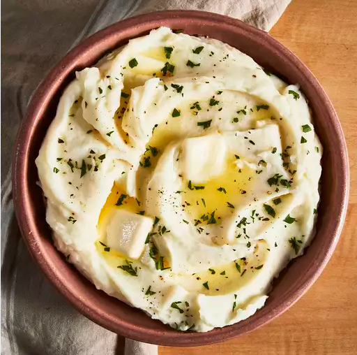

Mashed Potato

A good old-fashioned mashed potatoes that is easy to make.
Best serve with gravy or extra butter on top
Ingredients
- 2 pounds potatoes, peeled and quartered
- 3 cloves garlic, peeled, or to taste (Optional)
- 1 cup milk
- 2 tablespoons butter
- salt and ground black pepper to taste
Steps
- Bring a large pot of salted water to a boil. Add potatoes
and garlic, lower heat to medium, and simmer until potatoes
are tender, 15 to 20 minutes.
- When the potatoes are almost finished, heat milk and butter in
a small saucepan over low heat until butter is melted.
- Drain potatoes and return to the pot. Slowly add warm milk mixture,
blending it in with a potato masher or electric mixer until potatoes
are smooth and creamy. Season with salt and pepper.
- Enjoy your creamy and tasty mashed potato!
Tips
You can use skim, low-fat, or whole milk for richer taste
> Back to more recipes